06-k8s数据持久化
前面的学习，我们已经基本完成了在k8s中部署一个web服务，运行pod、创建service、创建ingress对外提供域名的七层代理。
下一个环境就得去关注应用部署后的数据存储问题，容器化如何管理，k8s化如何管理。
1.什么是Volume
1.容器内部的存储数据，再容器生命周期中是很短暂的，伴随容器的销毁而删除，很不稳定。
2.并且在一个pod下同时运行多个容器，经常需要再多个容器之间共享文件。
3.因此k8s抽象了一个Volume存储卷来解决这些问题。
4.volume属于是pod的一部分，不能单独创建，只能在pod中定义（谨记）。
5.pod中的所有容器都可以访问Volume，且是挂载后使用，可以挂载到容器内任何目录。
6.k8s的volume不仅支持集群内部的资源类型，还支持第三方的存储类型。
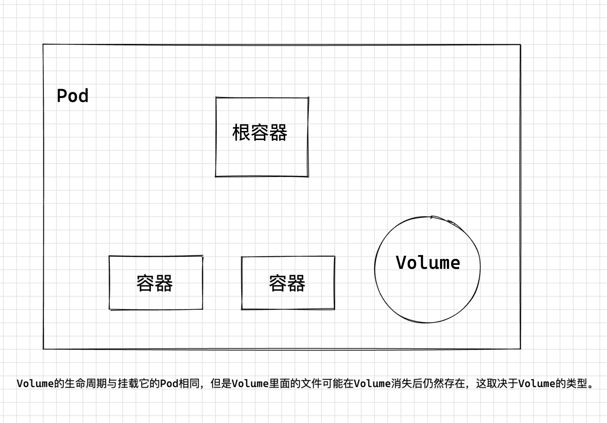
2.Volume类型
Kubernetes的Volume有非常多的类型，在实际使用中使用最多的类型如下。
- emptyDir：一种简单的空目录，主要用于临时存储。
- hostPath：将主机某个目录挂载到容器中。
- ConfigMap、Secret：特殊类型，将Kubernetes特定的对象类型挂载到Pod，在ConfigMap和Secret章节介绍过如何将ConfigMap和Secret挂载到Volume中。
- persistentVolumeClaim：Kubernetes的持久化存储类型，详细介绍请参考PV、PVC和StorageClass中会详细介绍。
2.1 EmptyDir类型
EmptyDir是最简单的一种Volume类型，根据名字就能看出，这个Volume挂载后就是一个空目录，应用程序可以在里面读写文件，emptyDir Volume的生命周期与Pod相同，Pod删除后Volume的数据也同时删除掉。
emptyDir配置示例如下。
- Pod内的容器共享卷的数据
- 存在于Pod的生命周期，Pod销毁，数据丢失
- Pod内的容器自动重建后，数据不会丢失
[root@k8s-master-10 ~/test-volumes]#cat busybox-volume.yml
apiVersion: v1
kind: Pod
metadata:
name: busybox-empty
namespace: yuchaoit
spec:
containers:
- image: busybox
name: test-busybox
volumeMounts:
- mountPath: /data/busybox/
name: cache-busybox
command: ["/bin/sh","-c","while true;do echo $(date) >> /data/busybox/www.yuchaoit.cn.log;sleep 2;done"]
volumes:
- name: cache-busybox
emptyDir: {}
emptyDir实际是将Volume的内容写在Pod所在节点的磁盘上
创建资源
[root@k8s-master-10 ~/test-volumes]#kubectl create -f busybox-volume.yml
[root@k8s-master-10 ~/test-volumes]#kubectl -n yuchaoit get po busybox-empty -owide
NAME READY STATUS RESTARTS AGE IP NODE NOMINATED NODE READINESS GATES
busybox-empty 1/1 Running 0 2m18s 10.2.1.48 k8s-node-11 <none> <none>
查看目标机器的Volume情况
# 1. docker inspect查看容器挂载信息
# 2. 查看宿主机挂载目录
[root@k8s-node-11 ~]#tail -f /var/lib/kubelet/pods/e631e809-d3e7-4bcf-8d13-3364a4e4add2/volumes/kubernetes.io~empty-dir/cache-busybox/*
Mon Sep 12 08:44:03 UTC 2022
Mon Sep 12 08:44:05 UTC 2022
Mon Sep 12 08:44:07 UTC 2022
Mon Sep 12 08:44:09 UTC 2022
Mon Sep 12 08:44:11 UTC 2022
Mon Sep 12 08:44:13 UTC 2022
Mon Sep 12 08:44:15 UTC 2022
Mon Sep 12 08:44:17 UTC 2022
Mon Sep 12 08:44:19 UTC 2022
干掉pod
[root@k8s-master-10 ~/test-volumes]#kubectl -n yuchaoit delete po busybox-empty
pod "busybox-empty" deleted
查看Volume状态
随之也被清空了
2.2 HostPath类型
https://kubernetes.io/zh-cn/docs/concepts/storage/volumes/
Container 中的文件在磁盘上是临时存放的，这给 Container 中运行的较重要的应用程序带来一些问题。
问题之一是当容器崩溃时文件丢失。 kubelet 会重新启动容器，但容器会以干净的状态重启。
第二个问题会在同一 Pod 中运行多个容器并共享文件时出现。 Kubernetes 卷（Volume） 这一抽象概念能够解决这两个问题。
阅读本文前建议你熟悉一下 Pod。
1.HostPath是一种持久化存储，emptyDir里面的内容会随着Pod的删除而消失，但HostPath不会
2.如果对应的Pod删除，HostPath Volume里面的内容依然存在于节点的目录中，如果后续重新创建Pod并调度到同一个节点，挂载后依然可以读取到之前Pod写的内容。
3.HostPath存储的内容与节点相关，所以它不适合像数据库这类的应用，想象下如果数据库的Pod被调度到别的节点了，那读取的内容就完全不一样了。
4.记住永远不要使用HostPath存储跨Pod的数据，一定要把HostPath的使用范围限制在读取节点文件上，这是因为Pod被重建后不确定会调度哪个节点上，写文件可能会导致前后不一致。
yaml
[root@k8s-master-10 ~/test-volumes]#cat busybox-volume.yml
apiVersion: v1
kind: Pod
metadata:
name: busybox-hostpath
namespace: yuchaoit
spec:
volumes:
- name: hostpath-busybox
hostPath:
path: /data/hostpath-busybox # 宿主机映射点
type: DirectoryOrCreate # 目录不存在自动创建
containers:
- image: busybox
name: test-busybox
volumeMounts: # 容器数据挂到Volume里
- mountPath: /data/busybox/ # 容器内挂载点
name: hostpath-busybox # 容器内挂载点，挂到哪个卷
command: ["/bin/sh","-c","while true;do echo $(date) 超哥带你学k8s >> /data/busybox/www.yuchaoit.cn.log;sleep 2;done"]
创建结果
[root@k8s-master-10 ~/test-volumes]#kubectl -n yuchaoit get po busybox-hostpath -owide
NAME READY STATUS RESTARTS AGE IP NODE NOMINATED NODE READINESS GATES
busybox-hostpath 1/1 Running 0 42s 10.2.1.49 k8s-node-11 <none> <none>
查看宿主机日志挂载
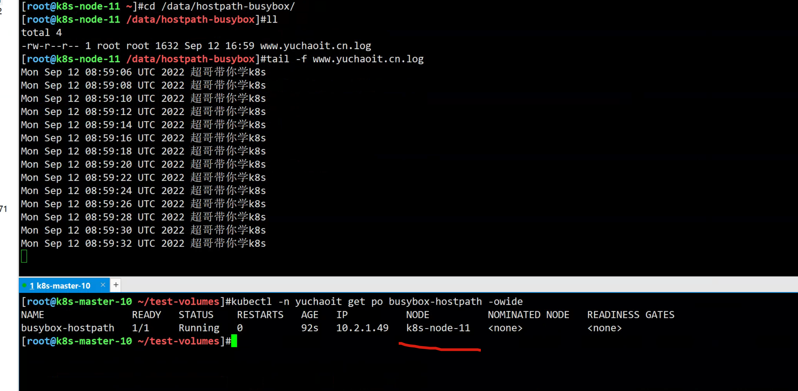
删除pod，查看hostPath数据
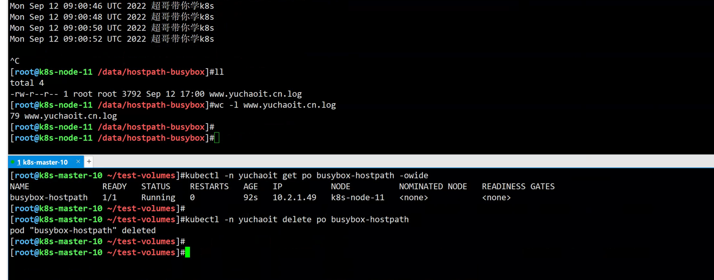
2.3 NFS 类型
https://kubernetes.io/zh-cn/docs/concepts/storage/volumes/#nfs
很明显，这种不一致的数据持久化，必然是不可取的，我们可以采用共享式存储文件系统，NFS就是个代表。
nfs 卷能将 NFS (网络文件系统) 挂载到你的 Pod 中。
不像 emptyDir 那样会在删除 Pod 的同时也会被删除，nfs 卷的内容在删除 Pod 时会被保存，卷只是被卸载。 这意味着 nfs 卷可以被预先填充数据，并且这些数据可以在 Pod 之间共享。
注意： 在使用 NFS 卷之前，你必须运行自己的 NFS 服务器并将目标 share 导出备用。
# 变化的只有关于Volume设置参数
# 查看应该用什么字段
# [root@k8s-master-10 ~/test-volumes]#kubectl explain pod.spec.volumes.nfs
# 提前准备好一个NFS服务器即可。
# yum install nfs-utils rpcbind -y
# /nfsShare *(insecure,rw,sync,root_squash)
具体yaml
[root@k8s-master-10 ~/test-volumes]#cat busybox-volume.yml
apiVersion: v1
kind: Pod
metadata:
name: nginx-volume-nfs
namespace: yuchaoit
spec:
volumes:
- name: nfs-data
nfs:
server: 10.0.0.11
path: /nfsShare
containers:
- image: nginx:1.14.1
name: nginx-volume-nfs
ports:
- name: http
containerPort: 80
volumeMounts: # 容器数据挂到Volume里
- mountPath: /usr/share/nginx/html/ # 容器内挂载点
name: nfs-data # 容器内挂载点，挂到哪个卷
创建pod查看nfs共享数据
[root@k8s-master-10 ~/test-volumes]#kubectl create -f nfs-volume.yml
pod/nginx-volume-nfs created
[root@k8s-master-10 ~/test-volumes]#
[root@k8s-master-10 ~/test-volumes]#kubectl -n yuchaoit get po -owide
NAME READY STATUS RESTARTS AGE IP NODE NOMINATED NODE READINESS GATES
nginx-deployment-6f7886b6db-pvjd5 1/1 Running 0 6h 10.2.2.60 k8s-node-12 <none> <none>
nginx-deployment-6f7886b6db-xsj8n 1/1 Running 0 6h 10.2.1.47 k8s-node-11 <none> <none>
nginx-volume-nfs 1/1 Running 0 6s 10.2.1.50 k8s-node-11 <none> <none>
[root@k8s-master-10 ~/test-volumes]#
[root@k8s-master-10 ~/test-volumes]#curl 10.2.1.50
<meta charset=utf-8>超哥带你学k8s www.yuchaoit.cn
思考
这只是给pod单个的添加Volume字段，如果一组pod控制器需要使用nfs，该如何配置？
volume支持的种类众多（参考 https://kubernetes.io/docs/concepts/storage/volumes/#types-of-volumes ）
每种对应不同的存储后端实现，因此为了屏蔽后端存储的细节，同时使得Pod在使用存储的时候更加简洁和规范，k8s引入了两个新的资源类型，PV和PVC。
PersistentVolume（持久化卷），是对底层的存储的一种抽象，它和具体的底层的共享存储技术的实现方式有关，比如 Ceph、GlusterFS、NFS 等，都是通过插件机制完成与共享存储的对接。
如使用PV对接NFS存储。
apiVersion: v1
kind: PersistentVolume
metadata:
name: nfs-pv
spec:
capacity:
storage: 1Gi
accessModes:
- ReadWriteMany
persistentVolumeReclaimPolicy: Retain
nfs:
path: /nfsShare
server: 10.0.0.11
2.4 实践持久化mysql数据
学习点
1.基于节点选择器指定运行mysql的Node
2.使用Deployment管理mysql
3.使用hostPath持久化mysql数据
yaml
apiVersion: apps/v1 # 注意这里与Pod的区别，Deployment是apps/v1而不是v1
kind: Deployment # 资源类型为Deployment
metadata:
name: mysql-deploy # Deployment的名称
namespace: yuchaoit
spec:
selector: # 要和pod的label对应上
matchLabels:
app: mysql
replicas: 1 # Pod的数量，Deployment会确保一直有1个Pod运行
template: # Pod的定义，用于创建Pod，也称为Pod template
metadata: # pod的信息
labels: # pod打上标签
app: mysql
spec: # pod具体字段属性，如容器信息，存储卷，pod部署节点等
volumes:
- name: mysql-volume # 卷名
hostPath: # 卷类型
path: /www.yuchaoit.cn/mysql # 宿主机目录
type: DirectoryOrCreate
nodeSelector: # pod部署节点选择器
diskType: ssd # label的key-value
containers: # pod内容器信息
- image: mysql:5.7 # 镜像下载地址
name: mysql-pod # 容器名
imagePullPolicy: IfNotPresent # 镜像下载策略
ports: # 容器内暴露端口
- name: mysql-port
containerPort: 3306 # 指明容器内要暴露的端口
env: # 给容器设置运行环境变量
- name: MYSQL_ROOT_PASSWORD
value: "www.yuchaoit.cn"
volumeMounts:
- mountPath: /var/lib/mysql # 容器内挂载点
name: mysql-volume # 挂载的设备，卷的名字
创建mysql-pod
[root@k8s-master-10 ~/test-volumes]#kubectl create -f mysql-deploy.yml
deployment.apps/mysql-deploy created
[root@k8s-master-10 ~/test-volumes]#kubectl -n yuchaoit get po
NAME READY STATUS RESTARTS AGE
mysql-deploy-569f9d64fc-86mpq 0/1 Pending 0 10s
# 查看事件，为什么pending
[root@k8s-master-10 ~/test-volumes]#kubectl -n yuchaoit describe pod mysql-deploy-569f9d64fc-86mpq
# 经典的事件报错
Events:
Type Reason Age From Message
---- ------ ---- ---- -------
Warning FailedScheduling 41s default-scheduler 0/3 nodes are available: 3 node(s) didn't match node selector.
Warning FailedScheduling 41s default-scheduler 0/3 nodes are available: 3 node(s) didn't match node selector.
# 给Node打上标签
[root@k8s-master-10 ~/test-volumes]#kubectl label nodes k8s-node-12 diskType=ssd
node/k8s-node-12 labeled
# 此时会发现pod动态已自动更新了
[root@k8s-master-10 ~/test-volumes]#kubectl -n yuchaoit get po mysql-deploy-569f9d64fc-86mpq -o wide
NAME READY STATUS RESTARTS AGE IP NODE NOMINATED NODE READINESS GATES
mysql-deploy-569f9d64fc-86mpq 1/1 Running 0 2m47s 10.2.2.61 k8s-node-12 <none> <none>
图解mysql-pod数据持久化
1.检查mysql节点的持久化数据
[root@k8s-node-12 /www.yuchaoit.cn/mysql]#ls
auto.cnf ca-key.pem ca.pem chaoge666 client-cert.pem client-key.pem ib_buffer_pool ibdata1 ib_logfile0 ib_logfile1 ibtmp1 mysql performance_schema private_key.pem public_key.pem server-cert.pem server-key.pem sys
[root@k8s-node-12 /www.yuchaoit.cn/mysql]#
2.尝试连接集群内pod的mysql
# 这里临时运行一个新pod，去登录mysql-pod。
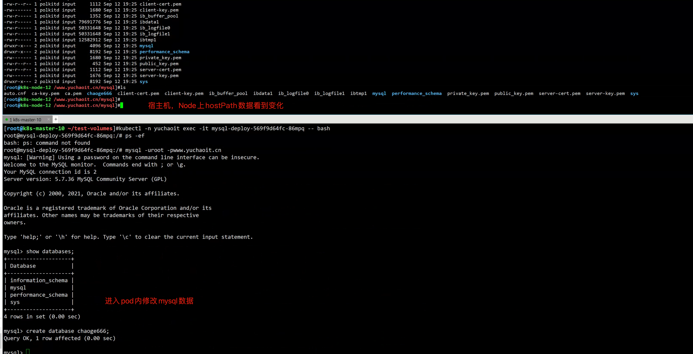
创建pod远程连接mysql-pod
[root@k8s-master-10 ~/test-volumes]#kubectl run client-mysql -it --image=mysql:5.7 -- bash -c 'mysql -uroot -pwww.yuchaoit.cn -h10.2.2.61 -P3306'
If you don't see a command prompt, try pressing enter.
mysql> status
--------------
mysql Ver 14.14 Distrib 5.7.36, for Linux (x86_64) using EditLine wrapper
Connection id: 6
Current database:
Current user: root@10.2.2.63
SSL: Cipher in use is ECDHE-RSA-AES128-GCM-SHA256
Current pager: stdout
Using outfile: ''
Using delimiter: ;
Server version: 5.7.36 MySQL Community Server (GPL)
Protocol version: 10
Connection: 10.2.2.61 via TCP/IP
Server characterset: latin1
Db characterset: latin1
Client characterset: latin1
Conn. characterset: latin1
TCP port: 3306
Uptime: 8 min 39 sec
Threads: 1 Questions: 15 Slow queries: 0 Opens: 105 Flush tables: 1 Open tables: 98 Queries per second avg: 0.028
--------------
mysql>
2.5 综合练习 k8s运行wordpress
以目前所有所学知识点，完成wordpress在k8s下的运行，并且可以通过域名
1. wordpress.yuchaoit.cn 访问博客集群入口
2. 用deployment控制器单独管理mysql(副本数1)、单独管理wordpress（副本数2）
3. 创建Service代理mysql，以及wordpress
4. 创建wordpress访问集群入口
实践
nfs共享存储
选用随便一个机器，如11机器。
yum install nfs-utils -y
cat >/etc/exports <<'EOF'
/nfs-volume/blog/ *(rw,sync,no_root_squash)
EOF
mkdir -p /nfs-volume/blog/
systemctl restart nfs
1. mydel-deployment.yml
yaml所有字段，不要求你去记住，会看、会修改、确保业务运行即可。
面试官问你，k8s中遇见不认识的字段，你是怎么处理的？
答。基于kubectl explain查阅资料，以及官网。
apiVersion: apps/v1 # 注意这里与Pod的区别，Deployment是apps/v1而不是v1
kind: Deployment # 资源类型为Deployment
metadata:
name: mysql-deploy # Deployment的名称
namespace: yuchaoit
labels:
app: mysql
spec:
selector: # RS控制器基于label匹配pod，确保副本数
matchLabels:
app: mysql
template: # Pod的定义，用于创建Pod，也称为Pod template
metadata:
labels: # pod打上标签
app: mysql # 必须和selector一样
spec:
volumes:
- name: db
hostPath:
path: /data/mysql
nodeSelector:
diskType: ssd
containers:
- image: mysql:5.7
name: mysql-blog
imagePullPolicy: IfNotPresent
args: # 容器运行参数
- --default_authentication_plugin=mysql_native_password
- --character-set-server=utf8mb4
- --collation-server=utf8mb4_unicode_ci
ports:
- name: dbport
containerPort: 3306 # 指明容器内要暴露的端口
env:
- name: MYSQL_ROOT_PASSWORD
value: www.yuchaoit.cn
- name: MYSQL_DATABASE
value: wordpress
- name: MYSQL_USER
value: wordpress
- name: MYSQL_PASSWORD
value: www.yuchaoit.cn
volumeMounts:
- name: db
mountPath: /var/lib/mysql/
创建结果
[root@k8s-master-10 ~]#kubectl -n yuchaoit get po -owide
NAME READY STATUS RESTARTS AGE IP NODE NOMINATED NODE READINESS GATES
mysql-deploy-75f47f87c-l7t8f 1/1 Running 0 6s 10.2.2.64 k8s-node-12 <none> <none>
2. mysql-svc.yml
给mysql服务，进行服务发现（选择pod 带有app: mysql）
apiVersion: v1
kind: Service
metadata:
name: mysql # Service的名称，服务发现名称
namespace: yuchaoit
spec:
selector: # Label Selector，选择包含app=nginx标签的Pod
app: mysql
ports:
- name: mysql-port
targetPort: dbport # 直接基于mysql-pod暴露的端口名即可对应
port: 3306 # Service对外暴露的端口，也就是ClusterIP的port
protocol: TCP # 转发协议类型，支持TCP和UDP
查看svc
[root@k8s-master-10 ~]#kubectl -n yuchaoit get svc mysql -owide
NAME TYPE CLUSTER-IP EXTERNAL-IP PORT(S) AGE SELECTOR
mysql ClusterIP 10.1.225.170 <none> 3306/TCP 103s app=mysql
# 确认svc可用
[root@k8s-master-10 ~]#docker run mysql:5.7.25 bash -c 'mysql -uroot -pwww.yuchaoit.cn -h10.1.225.170 -P3306 -e "status;"'
mysql: [Warning] Using a password on the command line interface can be insecure.
--------------
mysql Ver 14.14 Distrib 5.7.25, for Linux (x86_64) using EditLine wrapper
Connection id: 3
Current database:
Current user: root@10.2.0.0
SSL: Cipher in use is DHE-RSA-AES256-SHA
Current pager: stdout
Using outfile: ''
Using delimiter: ;
Server version: 5.7.36 MySQL Community Server (GPL)
Protocol version: 10
Connection: 10.1.225.170 via TCP/IP
Server characterset: utf8mb4
Db characterset: utf8mb4
Client characterset: latin1
Conn. characterset: latin1
TCP port: 3306
Uptime: 9 min 46 sec
Threads: 1 Questions: 10 Slow queries: 0 Opens: 105 Flush tables: 1 Open tables: 98 Queries per second avg: 0.017
--------------
3. wordpress-deploy.yml
于超老师强烈建议，纯手敲，前期别偷懒，挨个的理解字段的作用。
你可能会遇见N个错误，但是你也有了N个成长。
[root@k8s-master-10 ~]#cat deploy-wordpress.yml
apiVersion: apps/v1 # 注意这里与Pod的区别，Deployment是apps/v1而不是v1
kind: Deployment # 资源类型为Deployment
metadata:
name: wordpress-deploy # Deployment的名称
namespace: yuchaoit
labels:
app: wordpress
spec:
replicas: 2 # pod副本数
selector: # RS控制器基于label匹配pod，确保副本数
matchLabels:
app: wordpress
minReadySeconds: 5 # 新创建的 pod 应准备就绪的最小秒数
strategy: # 设置Deployment滚动更新pod的策略
type: RollingUpdate # 默认就是滚动更新
rollingUpdate:
maxSurge: 1 # 最大调度1个pod
maxUnavailable: 1 # 最多不可用1个
template: # Pod的定义，用于创建Pod，也称为Pod template
metadata:
labels: # pod打上标签
app: wordpress
spec:
volumes:
- name: nfs-data # 定义pod的数据卷，给容器使用
nfs:
server: 10.0.0.11
path: /nfs-volume/blog/ # 使用nfs的什么共享目录
initContainers: # 初始化容器，启动wordpress前，至少确认呢mysql是连通的，否则没意义
- name: init-db
image: busybox
command: ['sh','-c','until nslookup mysql;do echo waiting for mysql service done....www.yuchaoit.cn...;sleep 1;done;']
containers:
- image: wordpress
name: wordpress-blog
imagePullPolicy: IfNotPresent
ports:
- name: wordpressport # 容器暴露端口，对应的名字，便于其他服务调用
containerPort: 80
env: # 根据wordpress镜像要求的环境变量，传入参数
- name: WORDPRESS_DB_HOST
value: mysql:3306 # 传入的是Service名字，以及端口
- name: WORDPRESS_DB_USER
value: wordpress
- name: WORDPRESS_DB_PASSWORD
value: www.yuchaoit.cn
readinessProbe: # 就绪探针
tcpSocket:
port: 80
initialDelaySeconds: 5 #5秒后开始探测
periodSeconds: 10 # 10S探测一次
resources:
requests: # 节点所需的最小资源
memory: 256Mi
cpu: 200m
limits: # 限制pod最大资源使用量
memory: 256Mi
cpu: 200m
volumeMounts: # 容器使用卷
- name: nfs-data
mountPath: /var/www/html/wp-content # 容器内挂载点
# 这是一个经典的应用部署yaml，对于基础所需的deployment，部署应用，需要考虑到的pod字段，都用上了，作为学习pod部署样本。
#
[root@k8s-master-10 ~]#
创建wordpress应用pod，过程估计得有1分钟，有一个下载时间，可以提前先准备好镜像。
查看pod运行结果
[root@k8s-master-10 ~]#kubectl -n yuchaoit get po -owide -l app=wordpress
NAME READY STATUS RESTARTS AGE IP NODE NOMINATED NODE READINESS GATES
wordpress-deploy-c4df856c7-4p4bt 0/1 Init:0/1 0 5m8s <none> k8s-node-12 <none> <none>
wordpress-deploy-c4df856c7-qncj2 1/1 Running 0 5m8s 10.2.1.51 k8s-node-11 <none> <none>
# 熟练用describe去看资源状态
[root@k8s-master-10 ~]#kubectl -n yuchaoit describe pod wordpress-deploy-c4df856c7-
踩坑记录，客户端主机，不支持nfs插件
In some cases useful info is found in syslog - try
dmesg | tail or so.
Warning FailedMount 88s (x4 over 7m34s) kubelet (combined from similar events): MountVolume.SetUp failed for volume "nfs-data" : mount failed: exit status 32
Mounting command: systemd-run
Mounting arguments: --description=Kubernetes transient mount for /var/lib/kubelet/pods/ae9fd074-e367-4b0b-a84a-8a2132e265ff/volumes/kubernetes.io~nfs/nfs-data --scope -- mount -t nfs 10.0.0.11:/nfs-volume/blog/ /var/lib/kubelet/pods/ae9fd074-e367-4b0b-a84a-8a2132e265ff/volumes/kubernetes.io~nfs/nfs-data
Output: Running scope as unit run-116975.scope.
mount: wrong fs type, bad option, bad superblock on 10.0.0.11:/nfs-volume/blog/,
missing codepage or helper program, or other error
(for several filesystems (e.g. nfs, cifs) you might
need a /sbin/mount.<type> helper program)
In some cases useful info is found in syslog - try
dmesg | tail or so.
Warning FailedMount 49s (x4 over 7m39s) kubelet Unable to attach or mount volumes: unmounted volumes=[nfs-data], unattached volumes=[default-token-nkzpq nfs-data]: timed out waiting for the condition
[root@k8s-master-10 ~]#
# 给客户端机器，安装nfs套件即可。
[root@k8s-node-12 ~]#yum install nfs-utils -y
# 重建pod查看结果
[root@k8s-master-10 ~]#kubectl -n yuchaoit delete po -l app=wordpress
# 提示：可以去看目标机器的init容器运行结果
# 等待片刻后，通信没问题了
[root@k8s-master-10 ~]#kubectl -n yuchaoit get po -owide -l app=wordpress
NAME READY STATUS RESTARTS AGE IP NODE NOMINATED NODE READINESS GATES
wordpress-deploy-c4df856c7-qjs68 1/1 Running 0 6m51s 10.2.1.52 k8s-node-11 <none> <none>
wordpress-deploy-c4df856c7-x8gm9 1/1 Running 0 6m51s 10.2.2.66 k8s-node-12 <none> <none>
4.wordpress-svc.yml
apiVersion: v1
kind: Service
metadata:
name: wordpress # Service的名称，服务发现名称
namespace: yuchaoit
spec:
selector: # Label Selector，选择包含app=nginx标签的Pod
app: wordpress
ports:
- name: wordpress-port
targetPort: wordpressport # 直接基于wordpress-pod暴露的端口名即可对应
port: 80 # Service对外暴露的端口，也就是ClusterIP的port
protocol: TCP # 转发协议类型，支持TCP和UDP
查看svc
[root@k8s-master-10 ~]#kubectl -n yuchaoit get svc wordpress -owide
NAME TYPE CLUSTER-IP EXTERNAL-IP PORT(S) AGE SELECTOR
wordpress ClusterIP 10.1.49.131 <none> 80/TCP 60s app=wordpress
5.wordpress-ingress.yml
支持集群内配置就完毕了，提供一个外部访问入口吧。
apiVersion: networking.k8s.io/v1
kind: Ingress
metadata:
name: wordpress
namespace: yuchaoit
spec:
rules: # 转发规则
- host: "wordpress.yuchaoit.cn" # 填入你们的业务域名
http: # 基于http协议解析
paths: # 基于url路径匹配
- pathType: Prefix #要设置路径类型，否则不合法，
path: "/" # 以 / 分割的URL路径前缀匹配，区分大小写，这里表默认所有路径。
backend: # 后端Service信息的组合
service:
name: wordpress # 代理到名字是service1的ClusterIP
port: # 代理到的Service的端口号。
number: 80
查看结果
[root@k8s-master-10 ~]#kubectl -n yuchaoit get ingress
Warning: extensions/v1beta1 Ingress is deprecated in v1.14+, unavailable in v1.22+; use networking.k8s.io/v1 Ingress
NAME CLASS HOSTS ADDRESS PORTS AGE
test-ingress <none> www.yuchaoit.cn 80 32h
wordpress <none> wordpress.yuchaoit.cn 80 4s
# 可以去ingress控制器里看nginx规则
6.访问试试！！
hosts解析来一波
10.0.0.10 www.yuchaoit.cn wordpress.yuchaoit.cn
[root@k8s-master-10 ~]#kubectl --namespace=nginx-ingress logs -f nginx-ingress-75c88594dc-klfqc
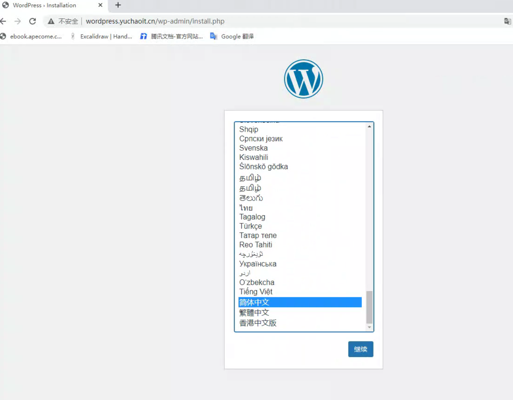
访问结果
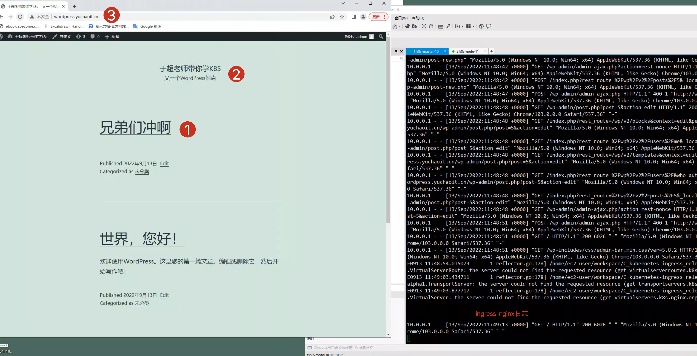
3.PV(PersistentVolume) 持久化存储卷
前面介绍的是针对pod资源设置Volume的三种玩法
EmptyDir，非持久化
hostPath，属于持久化，但只限在具体Node，只适合读的场景。
nfs，属于持久化。
如果要求pod在重新被调度后，依然能保留，使用之前读写后的数据，就必须用网络存储；
网络存储有很多主流的方案，块存储、文件存储、对象存储等。
开源技术
cephFS
GlusterFS
NFS
生产环境下的公有云厂商提供的
-对象存储
-云硬盘
-弹性文件系统
k8s为了解适配诸多的存储技术，抽象了PV、PVC两个资源，让运维不用关心具体的存储基础设施来源，只需要关心使用存储资源，声明好自己要用多少资源即可。
图解生产下的k8s存储架构
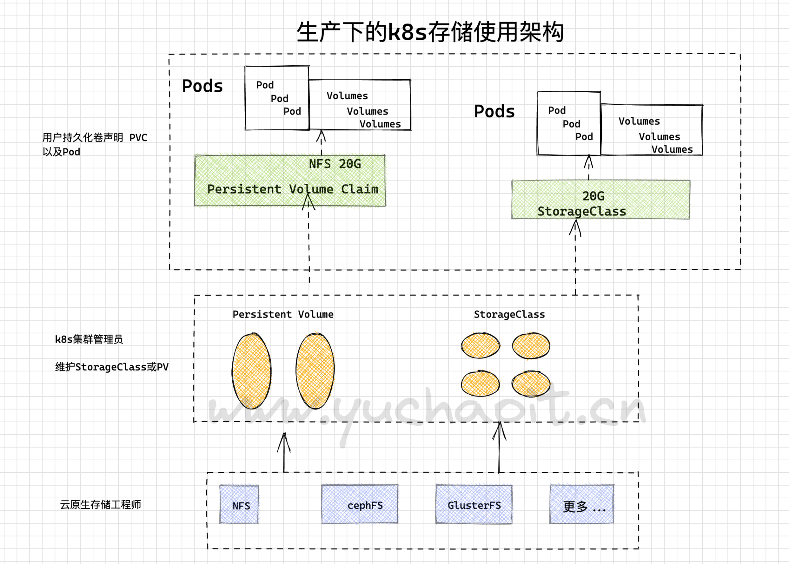
PV是什么
PersistentVolume
PV描述的是持久化存储卷，主要定义的是一个持久化存储在宿主机上的目录，比如一个NFS的挂载目录。
PVC是什么
PersistentVolumeClaim
PVC描述的是Pod所希望使用的持久化存储的属性，比如，Volume存储的大小、可读写权限等等。
PVC绑定PV
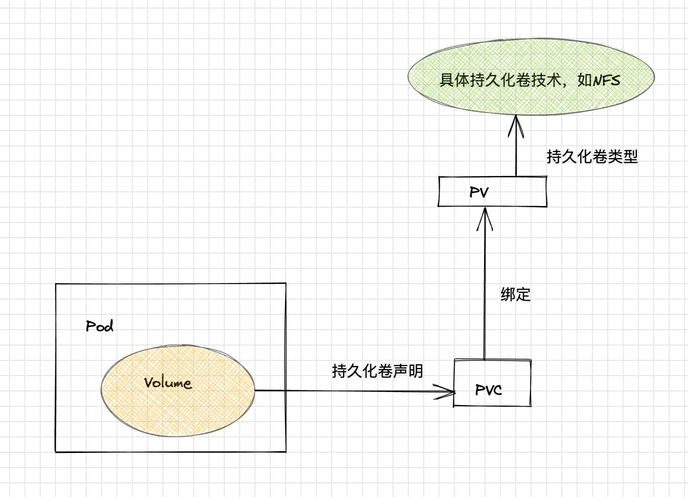
1. pv是对底层网络共享存储的抽象，将共享存储定义为一种"资源"
2. PV由管理员先创建和配置
3. PVC则是用户对存储资源的一种 `申请`
4.对比理解的话
Pod的运行会消耗Node的资源、PVC会消耗PV的资源。
5.PVC的申请，有特定的存储空间，以及访问方式。
PV、PVC关系、与使用流程
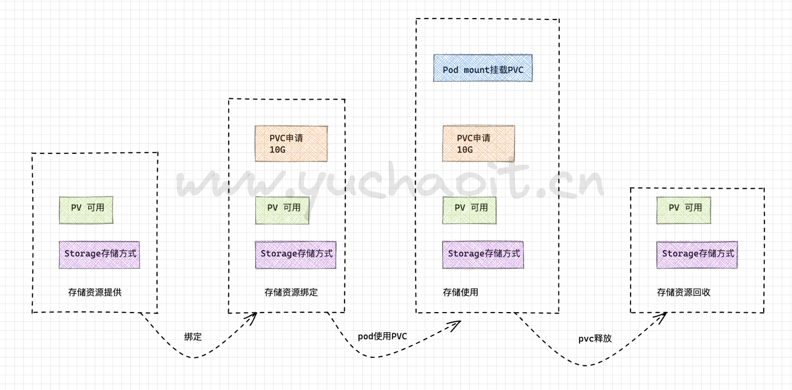
nfs与mysql数据共享持久化
1.准备NFS
yum install nfs-utils -y
mkdir /nfs-volume/mysql/ -p
cat > /etc/exports <<'EOF'
/nfs-volume/mysql/ 10.0.0.0/24(rw,async,no_root_squash,no_all_squash)
EOF
systemctl restart nfs rpcbind
systemctl enable nfs rpcbind
showmount -e 127.0.0.1
2.node安装nfs套件
yum install nfs-utils -y
showmount -e 10.0.0.10
3.管理员准备NFS-PV
apiVersion: v1
kind: PersistentVolume
metadata:
name: nfs-pv # pv资源名
# namespace: yuchaoit
spec:
capacity:
storage: 10Gi # 存储10Gi资源
accessModes:
- ReadWriteMany # 多个节点可以读写PV
persistentVolumeReclaimPolicy: Retain # PV回收策略，保留数据，需要管理员手工删除
nfs: # 对接存储类型
path: /nfs-volume/mysql/
server: 10.0.0.10
创建pv
[root@k8s-master-10 /all-k8s-yml]#kubectl create -f mysql-nfs-pv.yml
persistentvolume/nfs-pv created
[root@k8s-master-10 /all-k8s-yml]#kubectl -n yuchaoit get pv -owide
NAME CAPACITY ACCESS MODES RECLAIM POLICY STATUS CLAIM STORAGECLASS REASON AGE VOLUMEMODE
nfs-pv 10Gi RWX Retain Available 9s Filesystem
一个 PV 的生命周期中，可能会处于4中不同的阶段：
Available（可用）：表示可用状态，还未被任何 PVC 绑定
Bound（已绑定）：表示 PV 已经被 PVC 绑定
Released（已释放）：PVC 被删除，但是资源还未被集群重新声明
Failed（失败）： 表示该 PV 的自动回收失败
pv资源字段解释
capacity，存储能力， 目前只支持存储空间的设置， 就是我们这里的 storage=1Gi，不过未来可能会加入 IOPS、吞吐量等指标的配置。
accessModes，访问模式， 是用来对 PV 进行访问模式的设置，用于描述用户应用对存储资源的访问权限，访问权限包括下面几种方式：
ReadWriteOnce（RWO）：读写权限，但是只能被单个节点挂载
ReadOnlyMany（ROX）：只读权限，可以被多个节点挂载
ReadWriteMany（RWX）：读写权限，可以被多个节点挂载
persistentVolumeReclaimPolicy，pv的回收策略, 目前只有 NFS 和 HostPath 两种类型支持回收策略
Retain（保留）- 保留数据，需要管理员手工清理数据
Recycle（回收）- 清除 PV 中的数据，效果相当于执行 rm -rf /volume_yuchaoit.cn/*
Delete（删除）- 与 PV 相连的后端存储完成 volume 的删除操作，当然这常见于云服务商的存储服务，比如 ASW EBS。
目前只有NFS、HostPath两个类型的PV支持Recycle，直接删除。
PV不属于集群资源
因为PV是直接对接底层存储的，就像集群中的Node可以为Pod提供计算资源（CPU和内存）一样，PV可以为Pod提供存储资源。
因此PV不是namespaced的资源，属于集群层面可用的资源。
Pod如果想使用该PV，需要通过创建PVC挂载到Pod中。
当PV进入Released状态备注
若PVC被删除，PV会进入Released状态，PVC也无法重新绑定，PVC只能和Availabel状态的PV绑定。
生产做法是
1. 备份PV数据，迁移走
2. 修改PV状态，删除对PVC的引用记录，此时k8s的PV控制器watch到PV变化，更新PV状态，恢复Availabel状态。
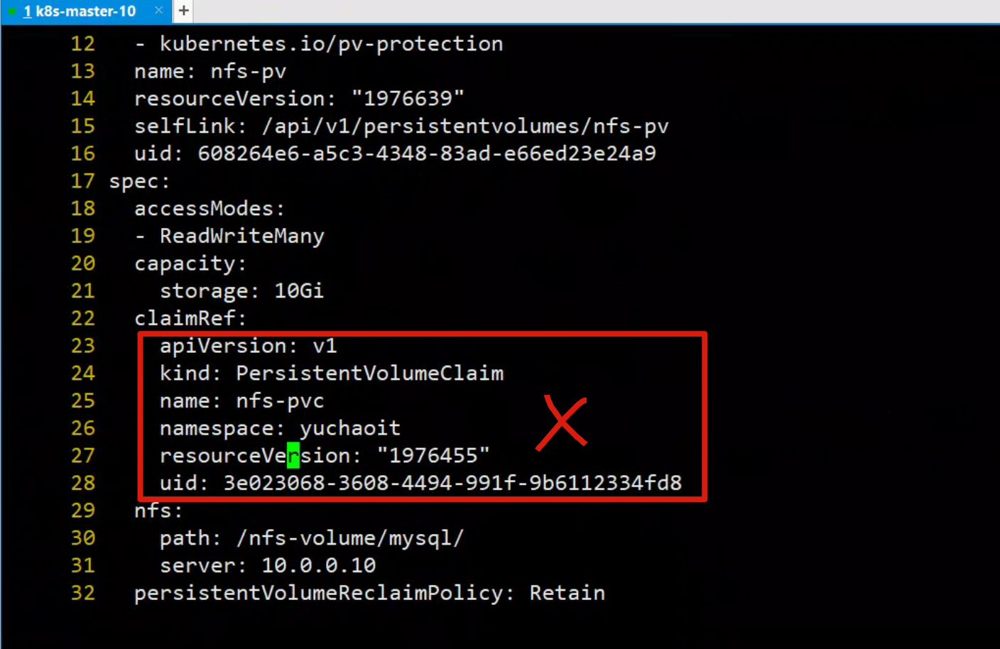
claimRef该字段记录PV、PVC的双向绑定记录
[root@k8s-master-10 /all-k8s-yml]#kubectl edit pv nfs-pv
persistentvolume/nfs-pv edited
[root@k8s-master-10 /all-k8s-yml]#kubectl -n yuchaoit get pv -owide
NAME CAPACITY ACCESS MODES RECLAIM POLICY STATUS CLAIM STORAGECLASS REASON AGE VOLUMEMODE
nfs-pv 10Gi RWX Retain Available 24m Filesystem
[root@k8s-master-10 /all-k8s-yml]#
4.用户创建mysql-pvc
PVC全写是PersistentVolumeClaim（持久化卷声明），PVC 是用户存储的一种声明，创建完成后，可以和PV实现一对一绑定。
对于真正使用存储的用户不需要关心底层的存储实现细节，只需要直接使用 PVC 即可。
apiVersion: v1
kind: PersistentVolumeClaim
metadata:
name: mysql-pvc
namespace: yuchaoit # pvc属于ns下的资源
spec:
accessModes:
- ReadWriteMany
resources:
requests:
storage: 1Gi # 声明PVC用多少存储
volumeName: nfs-pv # PVC绑定PV
# 也可以不填,
#PersistentVolumeController会不断地循环去查看每一个 PVC，是不是已经处于 Bound（已绑定）状态。
# 如果不是，那它就会遍历所有的、可用的 PV，并尝试将其与未绑定的 PVC 进行绑定
# 这样，Kubernetes 就可以保证用户提交的每一个 PVC，只要有合适的 PV 出现，它就能够很快进入绑定状态。
# 而所谓将一个 PV 与 PVC 进行“绑定”，其实就是将这个 PV 对象的名字，填在了 PVC 对象的 spec.volumeName 字段上。
创建pvc，绑定PV
[root@k8s-master-10 /all-k8s-yml]#kubectl create -f mysql-nfs-pvc.yml
persistentvolumeclaim/nfs-pvc created
[root@k8s-master-10 /all-k8s-yml]#kubectl -n yuchaoit get pvc -owide
NAME STATUS VOLUME CAPACITY ACCESS MODES STORAGECLASS AGE VOLUMEMODE
nfs-pvc Bound nfs-pv 10Gi RWX 7m43s Filesystem
[root@k8s-master-10 /all-k8s-yml]#kubectl -n yuchaoit get pv -owide
NAME CAPACITY ACCESS MODES RECLAIM POLICY STATUS CLAIM STORAGECLASS REASON AGE VOLUMEMODE
nfs-pv 10Gi RWX Retain Bound yuchaoit/nfs-pvc 25m Filesystem
5.storageClass实现动态挂载
上面于超老师讲的PV、PVC、创建pv及pvc过程是手动，且pv与pvc一一对应，手动创建很繁琐。
k8s提供了一个更简单的方法，能动态自动创建PV。
通过storageClass + provisioner的方式来实现通过PVC自动创建并绑定PV。
这里作为高阶存储玩法，以后再补充。
6.创建mysql-deployment控制器
apiVersion: apps/v1 # 注意这里与Pod的区别，Deployment是apps/v1而不是v1
kind: Deployment # 资源类型为Deployment
metadata:
name: mysql-deploy # Deployment的名称
namespace: yuchaoit
labels:
app: mysql
spec:
selector: # RS控制器基于label匹配pod，确保副本数
matchLabels:
app: mysql
template: # Pod的定义，用于创建Pod，也称为Pod template
metadata:
labels: # pod打上标签
app: mysql # 必须和selector一样
spec:
volumes: # 给pod内定义2个卷
- name: mysql-pvc
persistentVolumeClaim: # pod引用PVC
claimName: mysql-pvc
- name: mysql-log
hostPath:
path: /var/log/mysql
nodeSelector: # pod部署节点选择器
diskType: SSD
containers:
- image: mysql:5.7
name: mysql
imagePullPolicy: IfNotPresent
ports:
- name: dbport
containerPort: 3306 # 指明容器内要暴露的端口
env:
- name: MYSQL_ROOT_PASSWORD
value: "www.yuchaoit.cn"
volumeMounts:
- name: mysql-pvc # 容器内挂载pvc
mountPath: /var/lib/mysql # 挂载点
- name: mysql-log
mountPath: /var/log/mysql
运行
[root@k8s-master-10 /all-k8s-yml]#kubectl create -f mysql-deploy.yml
起不来？看看问题
[root@k8s-master-10 /all-k8s-yml]#kubectl -n yuchaoit describe pod mysql-deploy-98b786585-p9b9g
加上label
[root@k8s-master-10 /all-k8s-yml]#kubectl label nodes k8s-node-12 diskType=SSD
error: 'diskType' already has a value (ssd), and --overwrite is false
[root@k8s-master-10 /all-k8s-yml]#kubectl label nodes k8s-node-12 diskType=SSD --overwrite
node/k8s-node-12 labeled
查看结果
[root@k8s-master-10 /all-k8s-yml]#kubectl -n yuchaoit get po -owide
NAME READY STATUS RESTARTS AGE IP NODE NOMINATED NODE READINESS GATES
mysql-deploy-98b786585-p9b9g 1/1 Running 0 2m12s 10.2.2.74 k8s-node-12 <none> <none>
7.结果测试
按如下流程测试即可
1.查看PV里的数据
[root@k8s-master-10 /nfs-volume/mysql]#ls
auto.cnf ca.pem client-key.pem ibdata1 ib_logfile1 mysql private_key.pem server-cert.pem sys
ca-key.pem client-cert.pem ib_buffer_pool ib_logfile0 ibtmp1 performance_schema public_key.pem server-key.pem
2.加一个数据试试
mysql> create database yuchao_k8s;
Query OK, 1 row affected (0.01 sec)
3.删除pod，查看数据能回来吗？（deployment保障了pod的副本数）
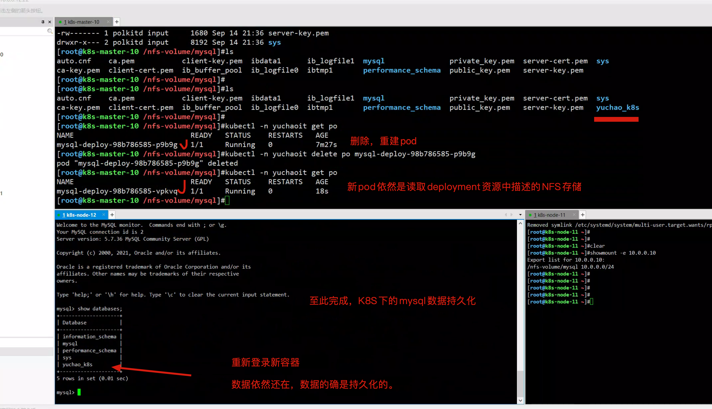